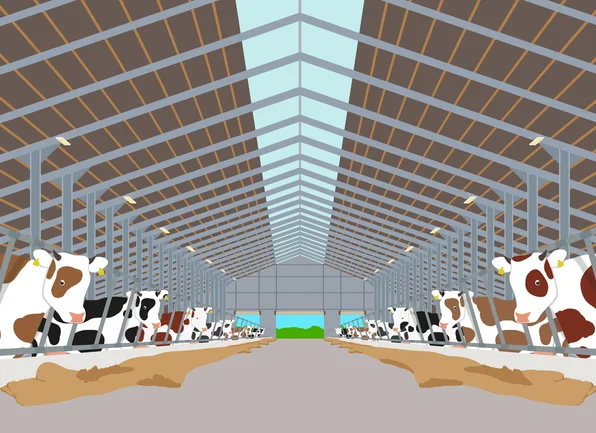
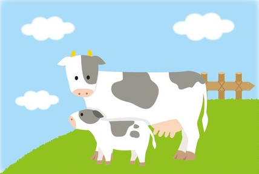
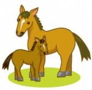
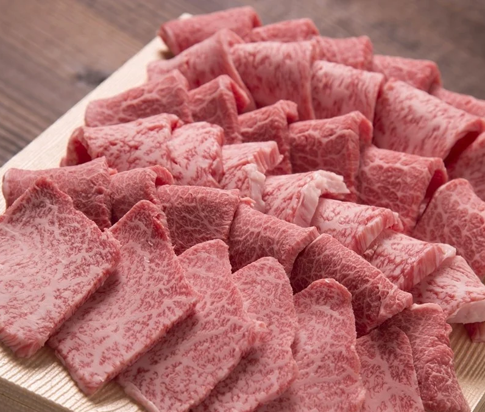

畜産DXサービス
過去の常識にとらわれず、まだ見ぬ飼養管理高度化システムを生み出すために、誇りをもってAI（人工知能）・ビッグデータ技術を磨き上げてきました。
個体別精密飼養管理を可能にするAI技術とビッグデータ処理性能によって実現したスマート酪農に対応した「飼養管理高度化システム」。
専用設計装置（活動量計、行動モニター）、データ解析エンジン、ソフトウェアアルゴリズムを自ら開発し実現することができました。
一筋に究めてきた飼養管理高度化システムで先進的な技術を誰もが手にできる畜産装置は、これからも畜産・酪農に向き合うすべての人の思いに応え続けると確信しております。
サービス一覧
-

- 飼養管理高度化システム
- 搾乳ロボットやセンシング技術の応用により得られる情報より、 これらの情報間のルールを導き出すことで、発情や疫病の予兆を早期に把握し、 酪農家に発情監視の強化や獣医師による早期診断などを促します。
-

- 哺乳牛と搾乳牛のトレーサビリティ高度化
- 子牛の個体情報をブロックチェーン技術によって、育成前情報とともに その母牛の繁殖・泌乳情報乳を関連付けます。 この乳牛トレーサビリティをAIで解析することで、 導入された子牛の将来の生産性等を予見することが可能となります。
-

- 馬分娩予測システム
-
AI を活用した正確で非侵襲的な分娩予測技術は
分娩事故の減少や労働負担の軽減に大きく寄与します。
またこの監視技術は、馬房内における馬の疝痛も検出でき、
繁殖牝馬のみならず全ての馬の健康管理にも対応できます。
【実証実験中】
-

- 畜産6次産業化促進支援
-
６次産業化促進の支援として特産品などの新たな販路の開拓や
生産地の多様な地域資源の広報を行います。